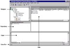
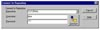
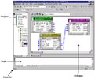
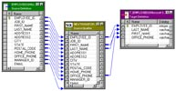
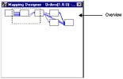
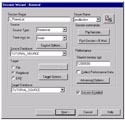
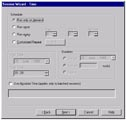
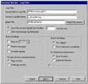
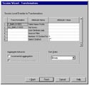

{kind=link}
{kind=link}
{kind=link}
{kind=link}
{kind=link}
{kind=link}
{kind=link}

| LevSelector.com |
| What is Informatica | home - top of the page - |
TEST
If you want to set up a Data Warehouse - then you will love to have Informatica software. It will greatly simplify DW design, and numerous routine tasks related to data transformation and migration (ETL - Extract, Transform, and Load), day-to-day maintenance and management.
Informatica has a simple visual interface. You do most of the work by simply dragging and dropping with your mouse in the Designer. This graphical approach makes it also very easy to understand what is going on (it is "self-documenting" in a sense).
Informatica can communicate with all major databases, can move/transform data between them. It can move huge volumes of data in a very effective way. It can throttle the transactions (do big updates in small chunks to avoid long locking and filling the transactional log). It can effectively do joins between tables in different databases on different servers. The tasks are performed by Informatica Server (Unix or MS Windows). You get a client application called "Server Manager" to work with the server.
You design your processes in a client application called "Designer". This is where you you tell what the source databases and tables will be, what will be the targets, and how you move/transform the data.
Informatica uses its own database called "Metadata Repository Database", or simply a Repository. Repository stores the data (rules) needed for data extraction, transformation, loading, and management. You get a client application "Repository Manager" to work with the repository.
Informatica comes in different packages:
The short overview below is based on PowerCenter v.1.7, and PowerMart 4.7 (this is dated at ~2000). Since then new versions were made, and all the version numbering was changed. The latest version of the PowerCenter is v.7 (end of 2003 - cost ~$200,000).
Other products by Informatica:
| Working with Informatica | home - top of the page - |
Here are the pieces of the puzzle:
Setting everything up is also straighforward. Once the server components are installed and configured, you install the client applications, configure ODBC, register the Informatica Server in the Server Manager. Create a Repository, create users and groups, edit users profiles. Add source and target definitions, set up mapping between the sources and targets, create a session for each mapping - and run sessions (resulting in writing data to targets).
| Repository Manager | home - top of the page - |
The Repository Manager allows you navigate through multiple repositories and folders inside the repositories. Navigating it is very similar to navigating standard MS Windows Explorer. You have expandable tree on the left (Navigator Window) - and list of details of the objects in the selected folder (Main Window).
|
 |
 Repository Login |
Folders main contain Nodes (subfolders) - Sessions, Batches, Sources, Targets, Transformations, Mapplets (reusable sets of transformations) and Mappings. They in turn may contain corresponding individual repository objects - sessions, batches, sources, targets, transformations, mapplets and mappings, as well as shortcuts, batches, and session logs.
Interface is simple and intuitive, For example, to see the properties of an object - right-click on it - and select Properties. To create a new repository - choose Repository-Create Repository (you have to run in admin mode to be able to do this). Etc. You can reorder the columns in the main window by dragging, and sort by any column (just click on the corresponding header). The set of columns in the main window is different for each kind of the node or object.
Note: PowerMart Repositories are standalone. PowerCenter repositories can be standalone, local, or global.
You can work with:
Below the Navigator and the Main Window you may see two more windows:
| Designer Client Application | home - top of the page - |
Designer consists of several tools (choose Tools menu):
Windows:
Warehouse Designer - Import Tables:
Edit Table's Definitions:
Mapping Designer - creating mappings:
|  Mapping Designer |
 Example of a mapping |
 |
Note: you can open several workspaces (workbooks) - choose Window - New Window, and then select appropriate tool.
To make a mapping:
Note: Source has only Ouput ports, Source Qualifier has both input and output ports.
Here are some transformations:
To create a transformation, simply click on the corresponding transformation icon on the transformations toolbar - and then click in the workspace between the tables. The Designer adds a new transformation.
Chose Layout-Link Columns, drag needed fields from Source Qualifier to the Transformation, double-click on the title bar of the transformation to edit the transformation.
In the "Edit Transformations" dialog box you can check/uncheck necessary options (I/O ports, Group-By), add new ports as necessary, edt the expressions for each port (and validate them).
You can click on the Expression field - and edit expression in the Expression Editor:
You can chain transformations. You can do joins between tables in different databases using "Lookup" transformation to create local copy of the data. You connect transformations by dragging with the mouse from port to port.
| Server Manager | home - top of the page - |
Sessions are sets of instructions for Informatica Server when and how to move data from sources to targets.
Server Manager - a client application used to create and manage sessions and batches, and to configure session connections. You can monitor multiple Informatica Servers, navigate through folders and repositories. Here is what you can do in Server Manager:
Windows:
- Note:As usual you can dock/undock the windows by
double-clicking the title bar and/or dragging.
- Note: Cancel button - appears at the bottom-left
when the program communicates with the Informatica Server.
- Note: Server Manager can mark a session invalid
if something is wrong. You can open session properties, edit, and try again.
- Note: you can create/customize toolbars.
To create a session in Server Manager:
|  |  |  |  |
Monitoring and Running a Session:
Running the Session:
Organize sessions in a batch:
======================
{kind=link}
{kind=link}
{kind=link}
{kind=link}
{kind=link}
{kind=link}
{kind=link}